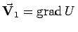

Inhalt Index DeskTop Bronstein

 Vektoranalysis und Feldtheorie Differentialgleichungen der Feldtheorie
Vektoranalysis und Feldtheorie Differentialgleichungen der Feldtheorie


Die Aufgabe der Bestimmung des Potentials U eines Vektorfeldes , in dem keine Quellen enthalten sind, führt gemäß (13.125) mit auf
 |
(13.130a) |
d.h. auf die LAPLACEsche Differentialgleichung. In kartesischen Koordinaten gilt:
Alle Funktionen, die dieser Differentialgleichung genügen, stetig sind und stetige partielle Ableitungen erster und zweiter Ordnung besitzen, werden LAPLACEsche oder harmonische Funktionen genannt.
Es werden drei grundlegende Fälle von Randwertaufgaben unterschieden: